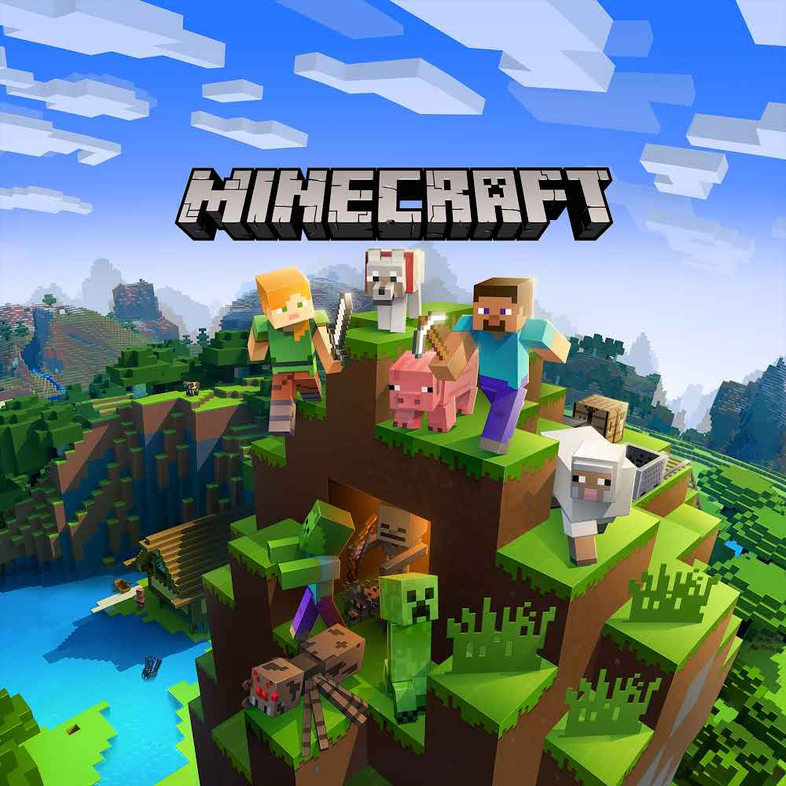
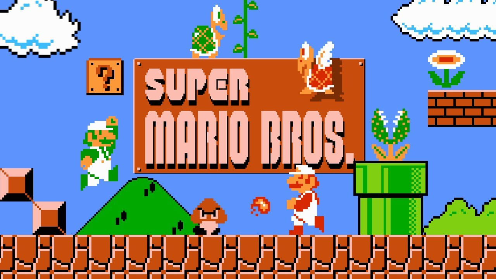
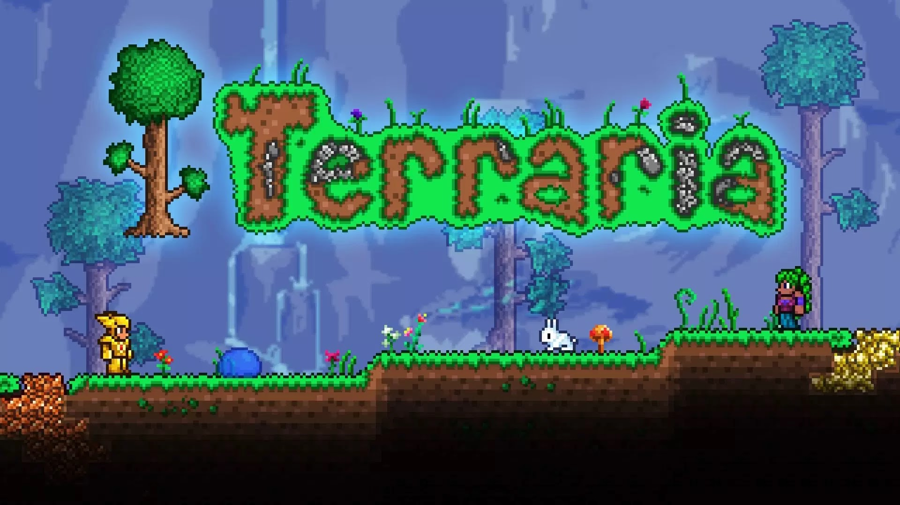

Aqui estão alguns jogos que envolvem geometria na sua jogabilidade até seu aspecto visual:

- Minecraft é um jogo eletrônico sandbox de sobrevivência criado pelo desenvolvedor
sueco Markus "Notch" Persson e posteriormente desenvolvido e publicado pela Mojang Studios, cuja propriedade intelectual foi obtida pela Microsoft em 2014.

- Super Mario (スーパーマリオ Sūpā Mario) é uma série de jogos eletrônicos de plataforma, criada pela Nintendo, baseada e estrelada pelo encanador fictício Mario. Alternativamente chamada de série
Super Mario Bros. (スーパーマリオブラザーズ Sūpā Mario Burazāzu) ou simplesmente série Mario (マリオ), é a série central da ampla franquia Mario.

- Geometry Dash é um jogo eletrônico disponível para celulares e PC's, desenvolvido pelo programador sueco Robert Topala, e publicado em 2013 por sua própria
empresa, RobTop Games.

- Terraria é um jogo eletrônico RPG de ação-aventura independente produzido pela desenvolvedora de jogos Re-Logic. Possui como características a exploração, artesanato, construção de
estruturas e combate a monstros perigosos em um mundo 2D gerado proceduralmente.